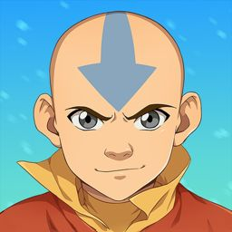

Hello there!
I'm John, a passionate and driven game developer with a love for creative art. My journey with programming began in 2020 when I stumbled upon Unity, and it was love at first sight. For the next two years, I immersed myself in the world of game development, following online tutorials, and learning C#. Though I didn't complete any projects during that time, the knowledge I gained was a solid foundation for my future endeavors.